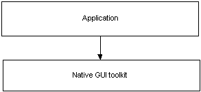
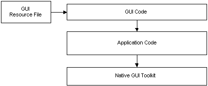
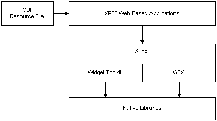
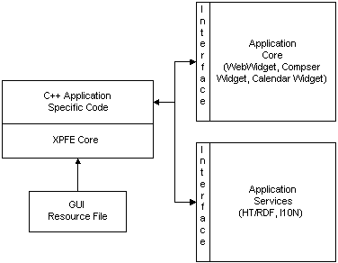
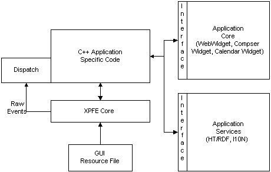
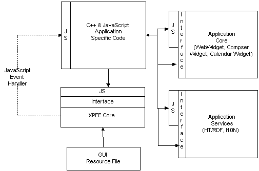

Architecture
Author: Kevin McCluskey, Rod SpearsUpdated: 10/23/98
| Table of Contents |
- Overview
- Brief History of GUI Development
- XPFE Requirements
- XPFE Architecture Overview
- XPFE Architecture
- XPFE Roadmap
- Dependencies
- Reference
| Overview |
|
What is XPFE?
XPFE is Cross-Platform Front End. This simply means that the graphical user interface for the Netscape suite of tools will be written once on top of cross-platform set of libraries. One benefit of this approach is to isolate the native platform differences into a single location (the widget toolkit) and provide a common set of services for supporting both HTML form widgets and the Front-End graphical user interface. XPFE is an enabling technology for building web based applications on top of the NGLayout technology. NGLayout is a cross platform layout engine that was designed to be fast and small. All of the platform specific code is isolated into two libraries:
Figure #1 - NGLayout Today most apps are written using an application framework such as MFC on Windows, or PowerPlant on the MAC. Since XPFE is cross-platform it must provide its own framework for building applications. XPFE relies on NGLAYOUT to provide the core of this cross-platform framework. XPFE adds additional widgets and layout behavior. XPFE is a set of libraries and services that will enable the developer to create complete cross platform applications. XPFE is a layered on top of the GFX and Widget libraries and takes advantage many different parts of NGLayout for the creation and layout of GUI components. The visual representation of the GUI is described in a cross platform resource file. The syntax for the resource file is a standard tag based mark up language (XML). Applications that are written with XPFE can have their GUI dynamically loaded at run-time. This enables the application to "expose" varying degrees of functionality depending on the GUI resource file that is loaded. This approach also provides a great deal of flexibility for internationalization and localization. Once the application is up and running, the GUI can be augmented with additional widgets/controls (i.e. additional toolbars or toolbar buttons) from an external source, such as visiting a web site.
|
| Brief History of GUI Development |
|
When GUI applications were first developed many developers intertwined
the core application code with the GUI code. This is often done because
the developer gets confused on the difference between the "state" of the
GUI and the "state" of the application (see figure #2)

These types of applications were quickly discarded or re-written so the GUI code was separate from the application code. The visual representation of the GUI was either hard coded or defined in a resource file (see figure #3). This made the applications much easier to maintain and add new features. 
A problem still exists that GUI developers are still tempted to mix application and GUI code because the interface between the the application and GUI is not always well defined. |
| XPFE Requirements |
XPFE has two main requirements:
The challenge of creating a cross-platform GUI is:
The challenge of providing downable chrome is:
|
| XPFE Architecture Overview |
|
XPFE can be used as the foundation for building many different types
of applications. It enforce a clean separation between the application
code and the GUI code. Many, if not all, of NGLayout's components exist
as simple interfaces. Interfaces by their nature enforce this clean separation
because the implementation is hidden. XPFE is ideal for creating web based
application with the UI expressed in terms of some markup language.
XPFE is made up of several different components. These components taken as a whole make up the "core" XPFE functionality. Then, any number of GUIs can be built on top of the core. The core XPFE components are as follows:

A more specific use of XPFE is shown below in Figure #5 where the Application Core may be the WebWidget, the Application Services is RDF containing the bookmarks. The GUI developer creates the necessary HTML/XML for describing a browser UI and then writes the callback "glue" code for hooking up the UI to the WebWidget. 
|
| XPFE Architecture |
|
Introduction
XPFE includes both core technology and a structure for applications. The XPFE architecture allows the application's user-interface can be written in a combination of C++ and JavaScript. Parts of the core application or it's user-interface can be progressively exposed as JavaScript routines. The core technology within XPFE includes existing widgets, new widgets and integration within NGLAYOUT for reading and displaying documents describing user interface for windows and dialogs. The following description of a specific implementation will walk you through the architecture and provide a general idea of how it works. Each of the components in the diagram are describe in detail below. Assume that there is a browser application built from XPFE, the application flow would be as follows:
Figure #6 - The XPFE Architecture XPFE Architecture Diagram (Preliminary 10-22-98)
Design philosophy The core design is based on a separation of the application user-interface and the application core. In addition, dispatch code should be separated from the application's user-interface. App UI The application user-interface contains code to display dialogs and top-level windows. It also contains all of the code to process any events comming from the dialogs or windows. App Dispatch The code to dispatch events to the Application's user interface is placed in a separate module so that application dispatch can come from different sources including JavaScript. App Core The application core provides an API that can be called from the Application User-Interface. The core should not contain code to create or manage MenuBars or Dialogs. In addition, it should not contain code to process top-level windows and dialogs. This code should be placed in the App UI instead. An example of an App Core is the WebWidget. All of the code for performing direct manipulation should be placed in the AppCore. An example of this is the WebWidget. The code to process clicks on links and scrolling of the WebWidget should reside in the AppCore. In the case of the "ender widget" all of the code to process selection should be placed in the AppCore. Ifthe App UI needs information from the AppCore such as "is there a current selection" so that it can disable or enable a toobar button, this information should be provided to the App UI either through method calls or event listeners. In addition to direct manipulation, drag and drop processing should be included in the App Core as well. For many applications it should be possible to embedd the App Core in a page by specifying an object tag which has a reference to the AppCore. If the AppCore needs additional UI then it can be accomplished in two ways. The App Core can expose JavaScript functions which allow a XUI/HTML with JavaScript event handlers make calls into the AppCore. This allows the external interface (i.e. non direct manipulation) to be controlled by the page designer. An alternative is to have the object tag refer to a combination of App UI and AppCore. The AppUI in this case would not contain the full user-interface that a stand-alone application would provide. This corresponds to what the "ender" widget does today. App Services The application services include HT/RDF, I10N, and other modules which will be used across applications. UI Mgr The User Interface Manager is responsible for creating dialogs and top level windows. It also is reponsible for attaching an event listener to the dialog or window. Listener The listener interface is used to dispatch events generated by windows and dialog boxes. The events dispatched include high-level CLICK as well as low level MOUSE_DOWN and MOUSE_UP events. AppShell The Application shell contains the startup code for each native platform. It also contains the message pump. The Application UI is a sub-class of the application shell. XUI Document The XUI Document is a XML-based grammer for describing the layout of top-level windows and dialogs. It contains tags for specifying menubars, toolbars, statusbars, and tree controls. XUI Layout manager The layout of the XUI elements is done using a XUI layout manager. It is anticpated that the HTML Layout manager will not be sufficient to layout menubars,toolbars, statusbars, and tree controls properly. Rather than trying to add new behavior to the HTML Layout manager a new XUI Layout Manager mantains the layout of XUI Content. HTML + OBJECT Tag In some cases it is desirable to have the new widgets layed out by the HTML layout manager (Raptor). If this is the case, then the widget will be specifyable through the OBJECT tag syntax in HTML. Tree widgets are an example of a widget which you may want to layout both within a HTML Table within a dialog or within the Top-level XUI described window. It is expected that you should be able to insert a tree widget either within XUI or using the OBJECT tag within HTML. We may decide to allow a XUI document to be referenced through the OBJECT tag to so that a HTML document could take advantage of the XUI Layout manager within a region of the HTML dialog or window. CSS Stylistic information for XUI/HTML documents is stored in CSS rules. Each of the XUI elements includes a classid and id attribute so that it can be bound to style information provided by CSS. The id attached to XUI elements within the XUI Document will also be used for event dispatch to identify the widget. Content Model As the XUI Document is parsed XUI specific content is created. The Content that is created implements the nsIHTMLContent interface so that XUI Content can live in both the HTML Content area of the special XUI Content area. DOMXUI + DOMHTML interfaces The XUI Content is accessible through nsIDOMXUI Interfaces. These interfaces are defined through IDL and compatible with the nsIDOMHTML Interfaces defined for standard HTML elements. These interfaces provide programatic access to the widgets from C++ and later JavaScript. The bulk of the App UI Code will involve calls to these interfaces. Since the nsIDOMXUI Interfaces are similar to the nsIDOMHTML interfaces it should make it easy for programmers to migrate UI code that was written in C++ to JavaScript. CSS Style interfaces In addition to having access to the DOMXUI and DOMHTML interfaces, Application UI developers will also have access to a CSS Style DOM. This DOM contains API's for changing the style of the UI elements. This includes there colors and icons, etc. JavaScript (Security) When JavaScript is introduced there are security concerns. A site containing JavaScript could change your menu's so that your application no longer functioned properely or worked at all. If all of the UI elements are exposed to JavaScript there are an even more places that an errant JavaScript program could cause problems. In addition, the application core and application ui can expose methods to JavaScript which may give them indirect access to the filesystem and other OS services. One solution is limit the number of functions that are accessible through JavaScript. A more general solution is to differentiate between the JavaScript that exists in a page that is downloaded and the JavaScript that is referenced from the Page. The JavaScript within the page would not have access to any UI elements, App Core, or App UI functions. The JavaScript referenced from this page would be signed JavaScript and would have access to the UI elements, App Core, and App UI functions. Downloadable Chrome There are four different approarches to downloading the chrome using XPFE. They can be used separately or in combination. It is expected final and most general form of downloadable chrome will not be available in the first release of XPFE. Complete UI Replacement It is expected that you should be able to download XUI + HTML files which replace the entire user-interface, but not change the fundamental architecture of user-interface. For example, you may substitute a "Kid Friendly" user interface for the browser which contains different a different set of icons on the toolbar and changes each dialog box to be more kid oriented. In this scenario you can only replace the existing XUI+HTML files with new files that contain a subset of the widgets in the original UI. This can be achieved without adding an JavaScript. The application ui would be responsible for initiating the download of the replacement files.
The replacement of a single UI element such as a toolbar can be accomplished just like the Complete UI Replacement. The application UI would be responsible for initiating the download of a toolbar or other UI element. The original XUI/HTML files describing the element would probably have a reference to a another XUI/HTML file that contained the replacement UI component.
Some UI's components such as toolbars may actually be defined by combining a remote definition of toolbar created by NetCenter and a local defintion of a toolbar. In this case, the local and remote toolbar definitions will be read in to a RDF data store. RDF provides the ability to merging the local and remote toolbar definitions. The toolbar would get it's contents from a datasource which understands how to get and set data in the RDF datastore. This capability could be used by NetCenter or other web-sites to dynamically add new toolbars or menu items to the user interface. One the UI elements are merged they will be kept a local data store by saving the RDF datastore to disk.
JavaScript provides the ultimate control for merging, replacing, and removing UI elements. If we assume that we have exposed the full api's to the UI Manager, Application UI, and provided JavaScript DOMXUI interfaces. Since JavaScript would have access to the entire User interface it could dynamically create and insert new UI elements or remove UI elements. This full control would only be available to signed JavaScript however. In order to cleanup the UI elements created by the JavaScript code, the content developer will need to have an OnUnload JavaScript event handler registered which selectively removes any of the UI elements it added.
The event model used in XPFE is the NGLAYOUT event model. Within NGLAYOUT events are managed and dispatched through view and frame systems. For the App UI engineer this results in be able to insert a listener on either the window or dialog or listen to an individual widget. Localization (I10N) Localization within a XUI/HTML document is done primarly through resource URL's which contain a key used to retrieve the actual string for widget labels. New Widgets Creating a professional user-interface requires very a specific set of widgets. The existing set of widgets's within NGLAYOUT are adequete for defining HTML form elements, but are not sufficient for doing a browser or editor interface. The set of widget's within NGLAYOUT will be extended to include:
Some widgets tend have a large amount of "state" data that must be maintained. If there are multiple sources for the data, keeping the data in sync becomes an issue. To solve this problem, some of the new widgets will get their data from a "data source". This is basically the Model/View/Controller paradigm for widgets. With this approach only one copy to widget's data needs to be maintained. Tree widgets and toolbars are candidates for this approach. RDF RDF will be used primary as a service for getting and merging local and remote data. It may also be used to store the data used by the XUI Content. In this case there would still be content added to the standard content model, but the content would retrieve and set data in the RDF data source. Since the XUI file contains CSS, the CSS style rules would also have to be converted to RDF data. This is desirable because RDF has capabilities for merging data. This merging capability could be used to merge a local and remote definition of a toolbar, menu, or other ui elements. Merging of CSS rules requires more investigation. Modal Dialogs
Modeless dialog behave in a similar manner to modal dialogs. The event listener registered for the modeless dialog receives widget events. The event listener contains code which has access to he widgets within the dialog using the nsIDOMXUI and nsDOMIHTML interfaces. Adding and Removing XUI/HTML widgets All manipulation of the HTML widgets is done through a C++ interface DOMHTML interface. The XUI widgets are modified through a C++ DOMXUI interface. IDL Interface definition language provides a language neutral way of describing user-interfaces. NGLAYOUT includes a IDL compiler which can be used to generate both XPCOM interfaces callable from C++ and glue code to make the interface callable for JavaScript. The interfaces with XPFE should use IDL to allow the interfaces to be accessable from both languages. Testing Since XPFE-based applications separate the UI from the Application it should be possible to provide automatic testing suites which exercise the application core and applcation UI independently. If the Application UI and App Core provide JavaScript interfaces, a test harness may be written in JavaScript rather tan C++. A JavaScript test harness could be downloaded from a site which would simply the testing process. Design Advantages Since the design leverages NGLAYOUT for most everything the executable size should remain very small. Access to the widgets for the C++ programmer and JavaScript programmer are very similar. They both go through the DOM. This will make it easier to convert C++ code into JavaScript Code. The separation of the Application UI from the Application Core should make it easier to produce "ender like" and "web-widget" page-embeddable applications. Since most of the API's will be exposed through IDL, it should be straightforward to expose the interfaces to JavaScript. Even though we initially store XUI and HTML elements in different content model locations,it should be possible to move the new XUI elements directly in the HTML tree at a later date in a straight forward manner. Since from the beginning they use implement the nsIHTMLContent interface. In addition we may need to insert some widgets into both the XUI and HTML content models. A tree widget is an example of this. Sometimes we want the tree control to be layout out in a dialog using an HTML table layout. Other times we want the tree to be layout out on the top-level window as a pane using the XUI LayoutManager (similar to Aurora chrome). Design Disadvantages Since the design leverages NGLAYOUT for most everything, working on XPFE requires a deep understanding of NGLAYOUT. XPFE does not use a typical application framework for managing UI, instead
it uses NGLAYOUT framework. Engineers familiar with standard application
frameworks such as MFC or PowerPlant will have to learn this new framework.
nsUIManager Provides an interface for creating and displaying windows and dialogs.
class nsIUIManager : public nsISupports
// nsIUIManager // Methods to open a various types of windows. // The modal dialog is brought down
when the close method is called
NS_IMETHOD OpenModalDialog(nsIWidget*
aContainerWidget, nsURL aUrl,
// aContainerWidget : This is typically
the widget associated with a top
NS_IMETHOD OpenTopLevelWindow(nsIWidget*
aContainerWidget, nsURL aUrl,
} nsUIWindow Subclass of a Browser window which works with both XUI and HTML.
class nsUIWindow : public nsIUIWindow, nsIBrowserWindow
// METHODS For retrieving the
content from the window. These methods are used after
// - RATHER Than providing direct
manipulating of the widget's attributes. All manipulation is
// Search the content model for
a piece of content with the id specified. This
// Sets up an event listener
for any NS_EVENT. The listener will get the event after
} // LOOK At the existing listener interface within NGLAYOUT. This is probably all we need. Don't need another listener interface. class nsIEventListener { // This method gets called when the
an event is generated by a widget.
// In the case of MENU events, or Button
clicks on toolbars.
// TBD,
How to plug into NGLAYOUTS frame system to get
NS_IMETHOD Event(nsEvent &aEvent); // Retreives the an interface to the
content which initiated the event.
NS_IMETHOD GetContent(nsEvent &aEvent, nsIDOMHTMLElement &*Event); } //XXX: FILL IN, Look at how content is added
through the existing HTML
// Apps subclass this to initialize their
application.
class nsAppShell
// Native shells class nsMacShell
} class nsWindowsShell { } class nsMotifShell { } class XUILayout { } // Here are the NSIDom Interfaces for the
new widgets.
// These are the only thing that the UI code
should talk to
// These classes are generated from idl's. // XXX: In the prototype there is a XUI ToolbarManager.
NS_IMETHOD SetExpandTabURLs(const
nsString& aUpURL,
// Initially only the nsIDOMXUI widgets nsIDOMImageButton
nad nsIDOMXUILocationBar and nsIDOMXUIThrobber
class nsIDOMXUIToolbar : public nsIDOMHTMLElement
// XXX: These should be
expressed through the CSS style instead. With a combination
} class nsIDOMXUIImageButton : public nsIDOMHTMLElement
NS_IMETHOD SetBounds(const nsRect&
aBounds);
// XXX: These should be expressed through
the CSS style instead. With a combination
class nsIDOMXUIMenubar : public nsIDOMHTMLElement
class nsIDOMXUIMenu : public nsIDOMHTMLElement
class nsIDOMXUIMenuItem : public nsIDOMHTMLElement
class nsIDOMXUIPopupMenu : public nsIDOMHTMLElement
class nsIDOMXUITreeView : public nsIDOMHTMLElement
class nsIDOMXUIListView : public nsIDOMHTMLElement
class nsIDOMXUIHtmlArea : public nsIDOMHTMLElement
class nsIDOMXUISplitter : public nsIDOMHTMLElement
|
| XPFE Roadmap |
|
The first release of XPFE will enable developers to create applications
as described in the section above. All events generated from the GUI will
be passed to the application specific code for processing. The GUI code
will then have to determine what action to take based on what widget was
clicked on or manipulated (See figure #7).

JavaScript and XPFE The second revision of the XPFE will enable the use of JavaScript and JavaScript event handlers. The JavaScript event handlers by themselves have considerable utility by enabling a higher level event processing. When using JavaScript event handlers, methods within the C++ application specific code can be called directly from the GUI. The event handlers eliminate the need for "switching" off of button IDs. To enable JS event handlers, the C++ application specific code must implement a JavaScript interface to expose any methods that will be servicing GUI events. These exposed methods can then be referred to directly by the GUI described in the HTML/XML. The callback code is still written in C++ but the low-level event dispatch is eliminated. It may be desirable to code some or all of the application specific code in JavaScript. This would enable both the description of the visual representation and the application specific "glue" code to be dynamic and downloadable. To enable this, all components participating in the application must provide access from JavaScript; hat means that each higher level interface must be also be "wrapped" for use from JavaScript. Figure #8 shows how an application may use both C++ code and JavaScript code.  Figure #8 - Mixing JavaScript and C++ Application Specific Code For example, in a browser UI the "Back" and "Forward" buttons may be "wired" directly to the WebWidget's JavaScript event handlers. Then a "Add Bookmark" menu selection may call a JavaScript event handler in the application specific code for adding the bookmark directly though C++. A more powerful example of how JavaScript could be used as "glue" code, is by having it directly augment the UI. For example, a user browsers a web page that contains JavaScript for the loading of the document. This piece of JavaScript uses the JS interface to XPFE to add a new button to a toolbar. When the document is unloaded a small piece of JavaScript will then remove an UI elements that it added. Note: That when we allow emedded JavaScript to alter the UI for a given application it is important to realize this implies a GUI security manager that will grant or deney access to different parts of the UI. Full JavaScript
Figure #9 - Full JavaScript
|
| Dependencies |
- XML Parser
- XML Content Sink
- HT/RDF
- I10N
- Raptor Layout
- JavaScript
- GFX, NSPR, Widget
- Windows95, NT - Win32 API (Note: it is not dependent on MFC)
- Mac - MacOS
- Unix or Linux - XLIB X11R5 and MOTIF 1.2.
- Other OS's/windowing systems.